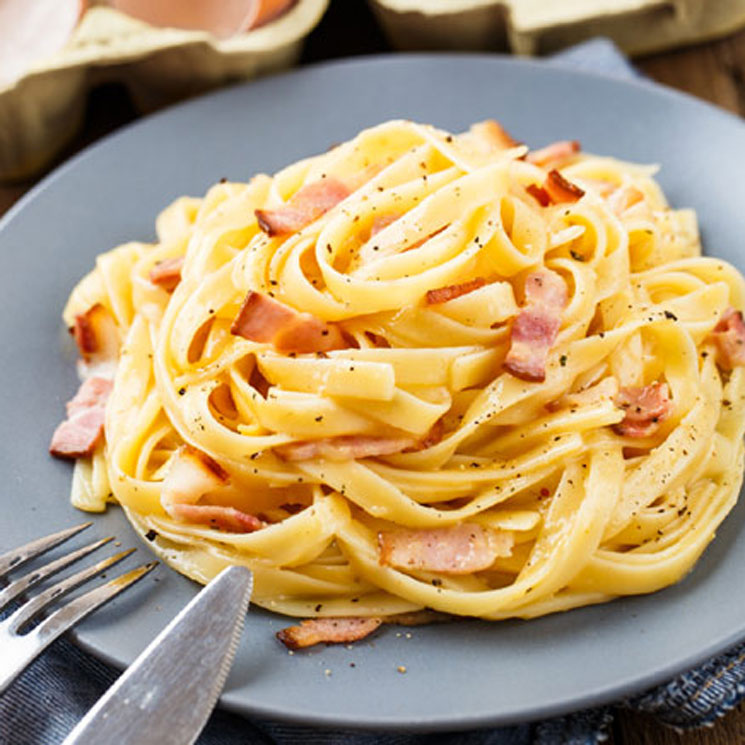

Ingredientes para 4 personas
- 400g de espagueti
- 2 huevos
- 150g de queso parmesano
- 120g de bacon o panceta
- sal y pimienta
- un pequeño chorrito de aceite de oliva
Preparación:
- - Ponemos un puñadito de sal (generoso) en abundante agua hirviendo. Después añadimos los
espagueti
y
los
dejamos cocer aquí alrededor de 10 minutos. hasta que estén al dente. Conviene removerlos
con
frecuencia
sobre
todo al principio de la cocción, para que no se peguen.
- - Mientras se cuecen preparamos la carbonara. En un bol añadimos las yemas de los huevos. La
clara
es
mejor
guardarla para otra elaboración ya que, si la añadimos, parecerá más una tortilla de
espaguetis,
que
una
salsa
en sí. Pero si no te importa, puedes añadirla. Añadimos también el queso rallado y mezclamos
ambos
ingredientes
con un tenedor. Quedará una especie de masa muy densa y ésta, será la carbonara.
- - En una sartén ponemos un pequeño chorrito de aceite. Cuando esté bien caliente, añadimos
el
bacon
o la
panceta, cortado en dados más bien pequeños. Pasados un par de minutos, cuando estén fritos,
retiramos
del
fuego
y reservamos.
- - Una vez hecho esto y cuando los espaguetis estén cocinados, guardamos unos cuantos
cucharones
del
caldo de
la cocción. Después escurrimos los espaguetis del resto del caldo.
- - Sin demora, ya que será el propio calor residual de los espagueti los que vayan a cocinar
la
carbonara,
echamos la pasta en el bol donde la habíamos preparado. Añadimos el bacon, con el juguito
que
hayan
podido
soltar y un poco del caldo de la cocción. Removemos todo bien con un tenedor para que los
espaguetis
absorban
toda la salsa. Si ves que queda muy densa, puedes añadir más caldo de la cocción, hasta que
haya
quedado
una
salsa muy cremosa (no olvides remover enérgicamente todo. La pasta es muy porosa y absorbe
las
salsa
con
relativa facilidad. Pero necesita ser removido para ayudar a este proceso).
- - Finalmente, cuando hayamos conseguido la cremosidad de la salsa deseado, espolvorear con
abundante
pimienta
negra recién molida. Se dice que el nombre carbonara viene del color que le da esta
especia,
que
recuerda
el
color del carbón. Servir inmediatamente.
